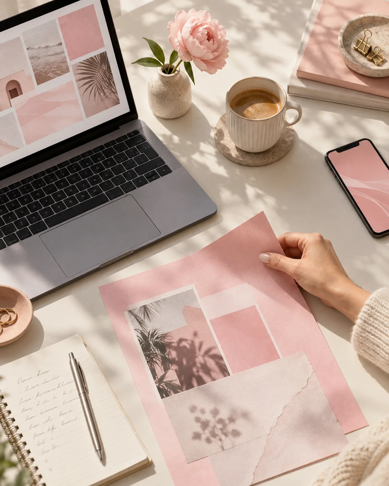

Gestión de
redes sociales
Una comunidad que se siente cerca. Planificación, publicaciones y conversación con la voz de tu marca.
Hola, soy Manu. Transformo ideas en contenido con personalidad para que tu marca conecte con las personas correctas.

No se trata solo de publicar. Se trata de encontrar eso que hace única a tu marca y convertirlo en una presencia que la gente quiera seguir, recordar y elegir.
Una comunidad que se siente cerca. Planificación, publicaciones y conversación con la voz de tu marca.
Ideas que toman forma en fotos, videos, reels y piezas visuales pensadas para conectar.
Una dirección clara para comunicar mejor, sostener tu identidad y crecer a tu manera.
UN POCO DE MI UNIVERSO
Una selección visual de contenidos y formatos que representan el estilo de Marketing by Oli. Encontrá las publicaciones originales en Instagram.
Conectamos emociones,
impulsamos tu marca.
La mente creativa detrás de Marketing by Oli.
MUCHO GUSTO, SOY MANU OLIVIERI
Soy community manager y creadora de contenido. Me encanta darle vida a marcas que tienen algo para contar, encontrar su voz y crear espacios digitales donde pasen cosas reales.
Desde Zárate, Buenos Aires, acompaño proyectos con creatividad, cercanía y una mirada estratégica.
Conoceme en InstagramContame tu idea y hagamos que cobre vida en redes.
Escribime por Instagram